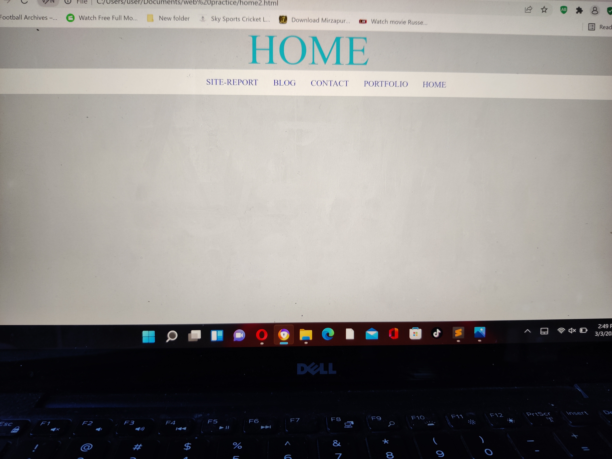
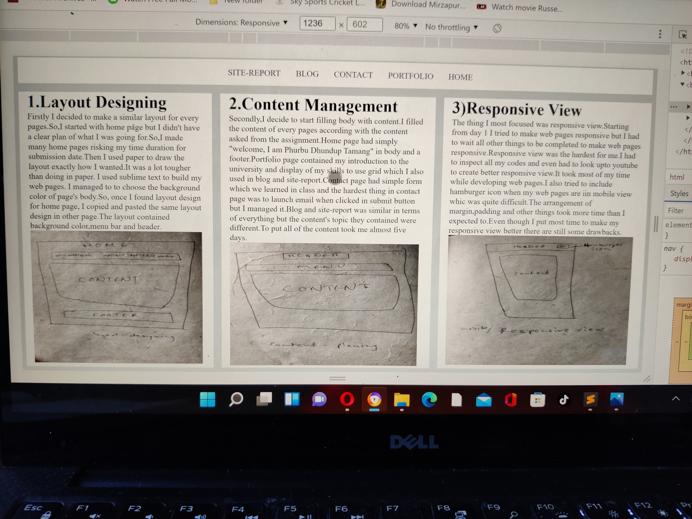

Experience of web developing
Learning web development has been one of the most interesting thing that i have learned.When we were tasked to make web pages I continued coding for many hours.I only stopped when there were bugs which I couldn't debug even after many tries.Sometime bugs made me frustrated but after refreshing myself I continued trying to debug.I have learned a lot through online.I even inspected other website so I could learn many new things.It has become very exciting to learn,code and debug.
Module Experience
Module code CSY1018 was the module which I learnt before surfacely but this module goes in depth of web developing.Every lecture and tutorial were very effective and the learning process has been fun.
REFERENCES
Report on my web pages
My web developing is divided in three parts.They are:
1.layout designing
-Layout desinging was the first thing I did on my web pages.Firstly I prepared a layout in homepage.
-Home-page's layout took me 3 to 4 days
-(feb19-feb22)
2.Content management
-Secondly,I kept some content on web pages
-(feb23-feb26)
3.Responsive view mangement
-I made web pages to be compatible in mobile
-(feb27-march3)